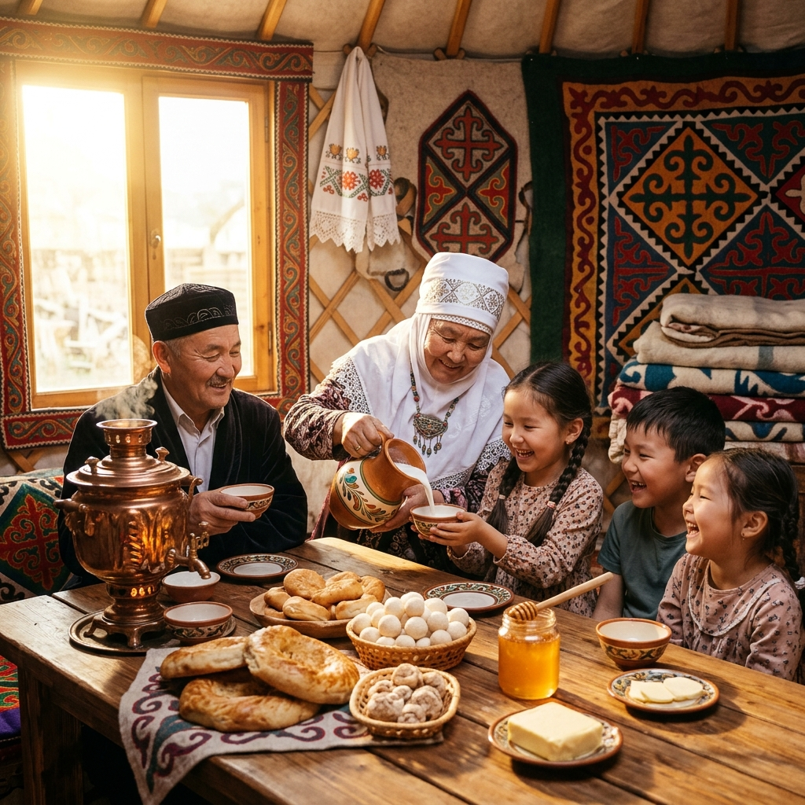
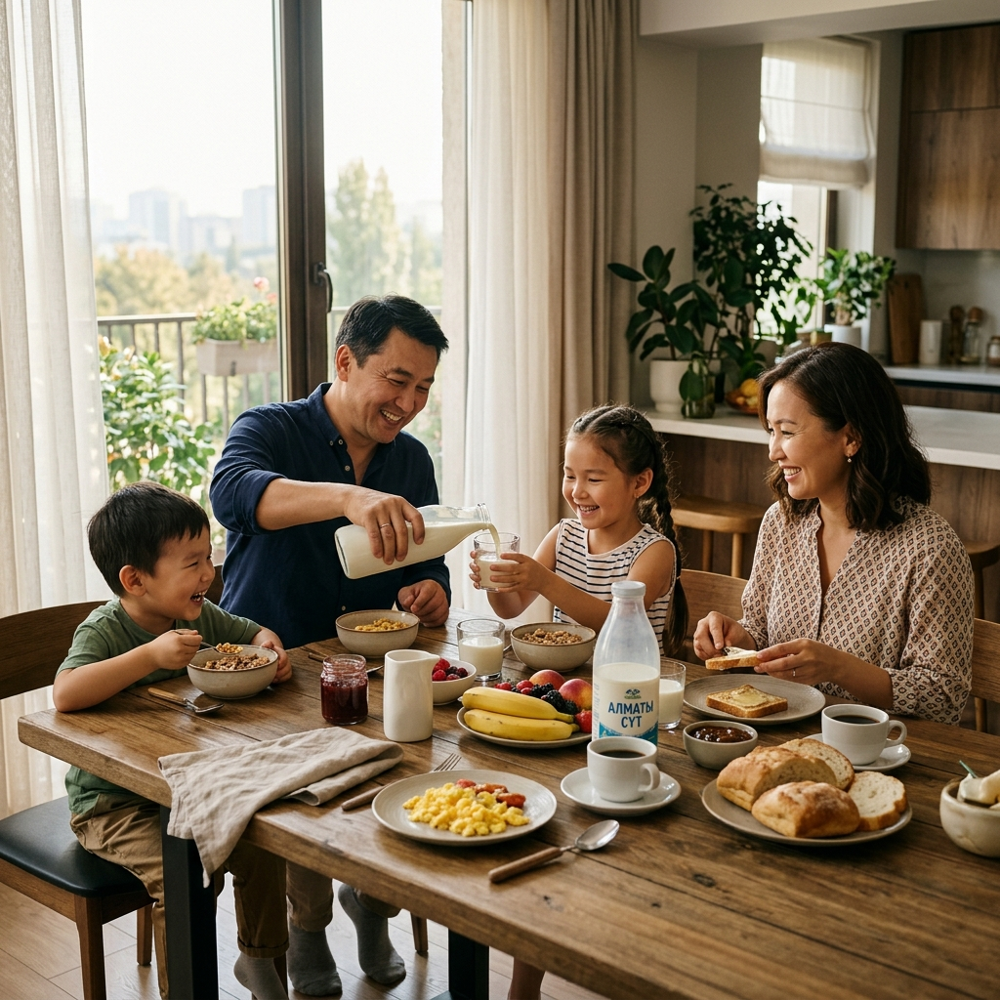

kz
ru

Как создавалось молочное будущее нашего региона
История Milkart — это не рассказ о сухих цифрах и графиках роста. Это история нашей семьи, наших друзей и нашего общего дела, которое родилось из простой мечты: вернуть на столы казахстанцев настоящее, чистое молоко. Мы начали этот путь в 2024 году прямо здесь, в Туркестане, веря, что честное отношение к делу всегда находит отклик в сердцах людей.
Все началось на обычной кухне в Туркестане. Мы обсуждали, как сложно стало купить в магазине настоящее молоко, которое не разбавлено водой и не сделано из сухого порошка. Мы поняли, что нашему священному городу нужно свое производство — честное, чистое и открытое. Мы собрали команду единомышленников и заложили первый камень нашего будущего завода, спроектировав его по самым строгим стандартам чистоты.

Мы понимали: чтобы сохранить молоко чистым, нам нужны лучшие технологии. Мы привезли современное оборудование из Германии и Италии. Мы настроили всё так, чтобы молоко после дойки шло напрямую в закрытые системы очистки и розлива, не соприкасаясь с воздухом и руками человека. Это гарантировало абсолютную свежесть и чистоту в каждой бутылке.

Осень 2024 года навсегда останется в нашей памяти. С конвейера сошла первая партия питьевого молока Milkart. Мы сами развозили его по магазинам Туркестана и с волнением ждали отзывов. И когда люди стали говорить, что наше молоко по вкусу точь-в-точь как домашнее с деревенской фермы, мы поняли, что всё сделали правильно.
В 2025 году наши покупатели стали просить большего. И мы начали делать кефир, густую сметану, домашний творог и настоящее сливочное масло. Мы расширили доставку на соседние районы области и начали поставлять продукцию в школы и детские сады. Мамы доверили нам самое ценное — здоровье своих детей, и это наша главная гордость.
Сегодня Milkart — это уже не просто маленький цех, а имя, которому доверяют тысячи семей. Но мы остались теми же простыми людьми, какими были два года назад. Мы продолжаем улучшать производство, беречь экологию нашей степи и планируем привезти наше молоко в каждый город Казахстана. Наша история пишется каждый день — нашими руками и вашей поддержкой.